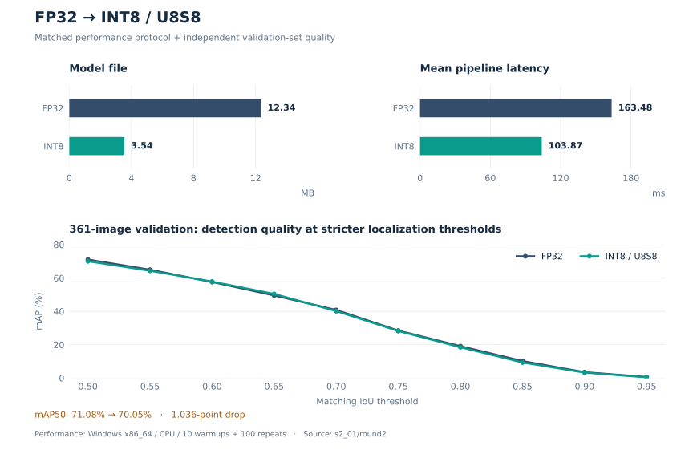
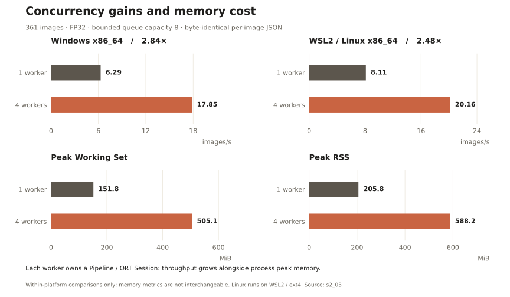

01 / APPLICATION
A usable workflow
Single images, batches, cooperative stop, zoom and result browsing in one desktop client.
A complete industrial inspection workflow: desktop interaction, configuration and model contracts, FP32 / INT8 inference, bounded batch processing, result validation, and functional verification across Windows, Linux and AArch64.

Single images, batches, cooperative stop, zoom and result browsing in one desktop client.
CLI and Qt share configuration, model contracts, pipelines, sessions and result formats.
Standalone benchmarks, profiling and quality reports expose both gains and trade-offs.
Windows / Linux runs, plus AArch64 cross-builds and functional execution under QEMU.
Configure the input, complete a batch, switch images and inspect detection details. Select a step to examine it, or play the full animation.

Qt adapts the existing Runtime for desktop interaction. Model selection, preprocessing, postprocessing, batch scheduling and output writing follow the same implementation across application entry points.
project_core stays lightweight; Runtime owns vision dependencies; Qt Widgets is enabled only in a separate, optional application target.
RuntimeConfig defines execution parameters; ModelArtifactSpec declares model, classes and I/O semantics. FP32 and INT8 are selected by configuration and retain float32 external I/O.
BatchRunner uses a bounded queue, with one pipeline / session owned by each worker. Results preserve input order. A corrupt image does not interrupt other tasks, and cooperative stop lets in-flight work finish.
The GUI thread owns widgets and interaction; background work calls the existing Runtime. Table models, image rendering, QSS and layout live in the Qt module, so visual changes leave inference contracts intact.
These charts are generated from existing repository reports. Quantization and concurrency experiments retain their own inputs, environments and timing definitions. Source links lead back to the recorded evidence.
Windows x86_64 · C++ Release · ORT 1.19.2 CPU · session threads 1/1 · one fixed image, 10 warmups / 100 repeats (2026-08-27)

FP32 · 361 images · queue capacity 8 · JSON output · independent Pipeline / Session per worker · ORT threads 1/1 (2026-08-30)

CMake, toolchain files and scripts organize platform dependencies and build environments. This matrix records completed Runtime checks; Qt desktop delivery is currently validated on Windows x64.
| Platform and environment | Single image | Directory / manifest | FP32 / INT8 | Bounded workers | Validation scope |
|---|---|---|---|---|---|
| Windows x86_64Native Windows · MSVC 19.50 · OpenCV 4.8.0 | ✓ | ✓ | ✓ | ✓ | Native CPU validation; current delivery platform for the Qt client. |
| WSL2 / Linux x86_64WSL2 Ubuntu 24.04 · GCC 13.3 · OpenCV 4.6.0 · ext4 | ✓ | ✓ | ✓ | ✓ | Linux Runtime / CLI validation, including directory / manifest parity. |
| Linux AArch64 / QEMUCross-compiled on x86_64 · GCC 13 · QEMU user mode | ✓ | ✓ | ✓ | ✓ | Functional portability only; no native ARM latency, memory or power claim. |
FP32 and formal U8S8 reuse RuntimeConfig → DetectorPipeline → BatchRunner. AArch64 cross-build and QEMU user-mode runs validate build, loading and functional portability.
The package collects Qt, OpenCV and ORT runtime dependencies, model configuration and samples. Running it requires no development SDK, compiler or Python installation.
Prepare MSVC x64, the Qt 6 Widgets MSVC kit, OpenCV and the ORT C++ SDK, then fill in local configuration. Dependencies and build instructions
Copy-Item cpp_infer/tools/stage1.local.example.psd1 cpp_infer/.stage1.local.psd1
Copy-Item cpp_infer/tools/qt.local.example.psd1 cpp_infer/.qt.local.psd1
# Edit SDK paths in both local configuration files
.\cpp_infer\tools\qt.cmd build
.\cpp_infer\tools\qt.cmd run
.\cpp_infer\tools\qt.cmd packagepackage writes to dist/yolo-defect-qt/ by default. Use your own build or a complete demo directory supplied by the author.
yolo-defect-qt/
├─ run.cmd Launch the workbench
├─ verify.ps1 Clean-environment check
├─ yolo_defect_qt.exe Qt Widgets
├─ yolo_defect_cpp.exe C++ CLI
├─ *.dll / platforms/ … Runtime dependencies
├─ configs/ + artifacts/ Config / model contracts
├─ models/ FP32 / INT8
├─ samples/ Six classes / manifest
├─ outputs/ Separate output per run
├─ demo/ index.html / index.en.html
├─ assets/ qt/ + engineering/
└─ licenses/ Component licensesUI, Runtime and package verification each have a clear entry point. The presentation connects to concrete implementations and acceptance checks.
| Scope | Checks | Entry point |
|---|---|---|
| Qt and CLI | FP32 / U8S8 and directory / manifest result and order parity; stopping, restarting, closing, selection and zoom. | qt.cmd test -Screenshots |
| Runtime / CLI | Independent builds and regression checks for core logic, configuration, contracts, batches and result writing. | stage1.cmd test / stage1.sh test |
| Benchmark and profiling | Separate CPU sessions, stage timings, P50 / P95, throughput and ORT operator analysis. | stage1.cmd benchmark / profile |
| Demo package | Restricted PATH checks for packaged dependencies, real detection and Qt startup. | powershell -NoProfile -ExecutionPolicy Bypass -File .\verify.ps1 |
Single-image benchmarks exclude warmup. Batch throughput is successful images / processing wall time. GUI task duration also includes preparation and writing; QEMU establishes functionality, while native ARM performance requires measurements on actual hardware.
Both READMEs and both pages share media assets. A common template and paired translations generate the pages; recorded evidence generates the charts, keeping screenshots, tour steps and bilingual explanations aligned.
.\cpp_infer\tools\qt.cmd media
python cpp_infer/tools/render_demo.py --check
.\cpp_infer\tools\qt.cmd package -PackageDir dist/yolo-defect-qt-newqt_demo_capture.cpp drives real Qt widgets and inference; qt_demo_media.py creates PNG, WebP and GIF assets using Pillow from requirements-qt-media.txt. Selected media lives in docs/assets/qt/, with temporary frames in the build directory. After changes to colors, fonts, icons or layout, run media again. Changes to widget names or workflow also require updating the capture script.
Edit page structure and styling only in docs/demo/page.template.html, with paired Chinese and English copy in content.json. render_demo.py generates index.html and index.en.html together; --check detects mismatched translation fields, step counts and stale output. Generated pages work directly offline without a server.
Run the following commands only when experiment reports change. demo_charts.py reads committed reports to generate evidence.json and docs/assets/engineering/ charts, using Matplotlib from requirements-demo-charts.txt. Update sources after new experiments and regenerate instead of editing plotted values manually. Preserve model-size, latency and quality-metric definitions.
python cpp_infer/tools/demo_charts.py
python cpp_infer/tools/render_demo.pyUse OBS window capture for continuous operation, or ScreenToGif for a short GIF. Follow the successful workflow shown here, retain the completed detection and image switches, and crop out unrelated desktop content.
Save video as docs/assets/qt/walkthrough.mp4 and add a video controls element to the shared template, using workbench.png as its poster. Regenerate both pages. Pages and packaging support copying MP4; READMEs can link a cover image to the video.
Commit the showcase files and .github/workflows/qt-demo-pages.yml to the default branch. In repository Settings → Pages, set Source to GitHub Actions. Open Actions, select Qt demo Pages and choose Run workflow. Use the Pages URL reported after a successful deployment.
The Chinese page is at /yolo_defect/demo/ and English at /yolo_defect/demo/index.en.html. After refreshing assets and generated pages, run the same workflow again. For offline use, keep demo/ and assets/ together so their relative links continue to work.
Development requires matching x64 Qt / MSVC / OpenCV / ORT SDKs. The demo package collects runtime dependencies; move the whole directory together. Run verify.ps1 to check package completeness. If detection fails, inspect the displayed error and result JSON first.
The C++ technical guide is the shared reference for obtaining the default model and samples, generating optional INT8 artifacts, resolving relative configuration paths and validating I/O contracts. Check input shape, class mapping and output semantics when replacing a model, and retain bundled license materials when distributing. Open the Runtime technical guide